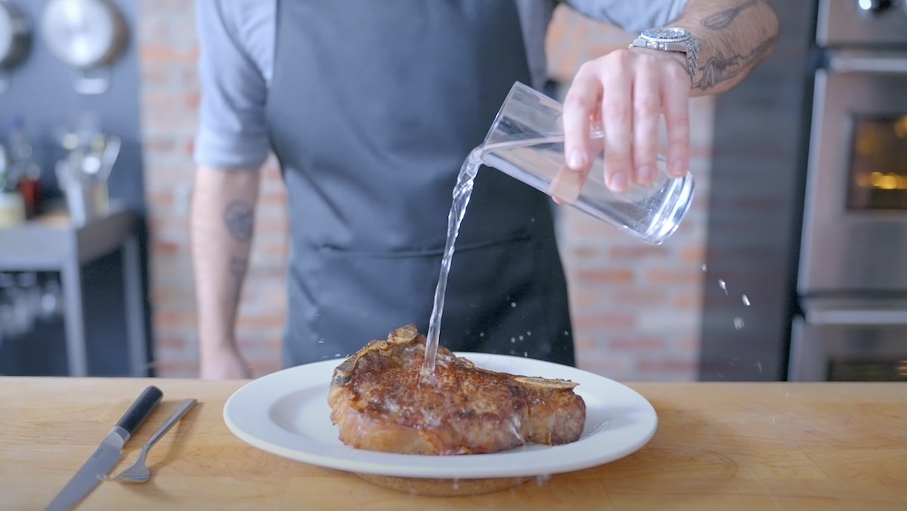

Homepage
Sloppy Steaks

Description
Description
Hey, so this week, we're kinda into that whole "milk steak" vibe from Always
Sunny and jazzing up this wild food gag from I Think You Should Leave with
Tim Robinson. You know, that dude who used to be a total jerk? He's all
nostalgic about hitting up Truffani's after clubbing, chomping on a massive
rare steak with just a glass of water. Note to all you TV and movie folks:
stick some grub in your stuff, and I'm all over it.